Document Control
Revision History
| Version | Date | Author | Notes |
|---|---|---|---|
v0.1 |
2026-09-22 |
Ryan Naveed |
|
1. ET-SoC-1 Overview
1.1. ET-SoC-1 at a Glance
ET-SoC-1 is a many-core RISC-V system-on-chip developed primarily for artificial-intelligence and machine-learning (AI/ML) workloads. It is designed as a flexible, fast and efficient inference engine for ML applications. Its compute resources are arranged in a multi-level hierarchy that delivers high sustained performance on regular, parallelizable workloads, such as those of ML algorithms.
The device integrates 1,093 general-purpose 64-bit RISC-V cores of three types:
-
1,088 ET-Minion cores for ML computation
-
4 ET-Maxion cores for management and general-purpose tasks
-
1 Service Processor for boot and device management
The cores are connected to on-die SRAM, external memory and a set of standard interfaces through a mesh network-on-chip (NoC). Table 2 summarizes the device.
| Item | Description |
|---|---|
ET-Minion cores |
1,088 in-order, dual-threaded RV64IMFC cores, each with an 8-lane vector/tensor unit |
ET-Maxion cores |
4 single-threaded, superscalar, out-of-order 64-bit RISC-V cores |
Service Processor |
1 single-threaded core derived from the ET-Minion |
On-die SRAM |
Each Minion Shire’s 4 MB Shire Cache can be partitioned by ESRs into L2, a slice of the chip-wide L3, and scratchpad. |
Interconnect |
Mesh NoC with 44 mesh stops |
External memory |
LPDDR4X, 16 channels x 16 bits, up to 4,266 MT/s |
PCI Express |
Gen4, 8 lanes. Endpoint, root complex, or both at once. |
Other interfaces |
eMMC, USB 2.0 OTG, I2C/SMBus, I3C, SPI, UART, GPIO. Debug access through JTAG and a USB 2.0 device port. |
1.2. The ET-Minion Hierarchy
The ET-Minion cores are organized in three levels, as shown in Figure 1:
-
ET-Minion core
-
Neighborhood: 8 ET-Minion cores
-
Minion Shire: 4 Neighborhoods (32 ET-Minion cores)
Each level adds resources that are shared by the units it contains. The device contains 34 Minion Shires, which together form the Minion Shire array (Section 1.2.4).
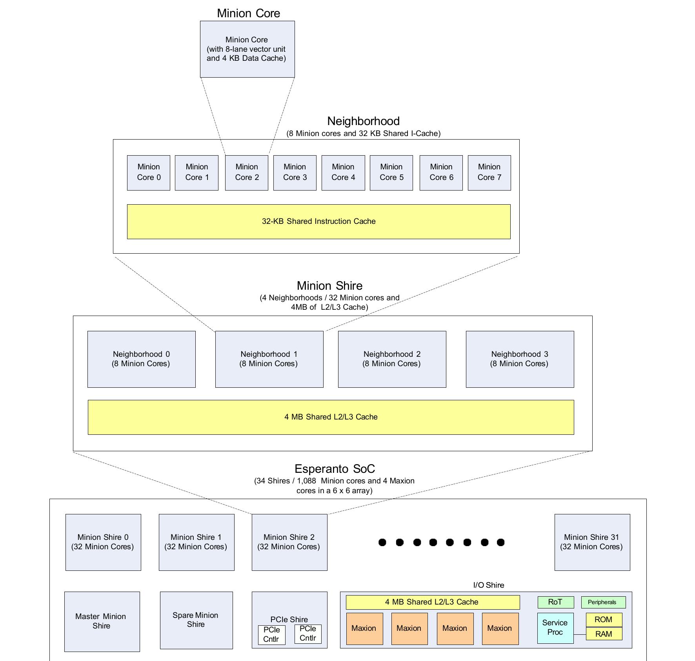
1.2.1. ET-Minion Core
The ET-Minion is a dual-threaded, in-order, single-issue 64-bit RISC-V core that implements RV64IMFC. Its main features are:
-
Two hardware threads (harts)
-
4 KB private L1 data cache, partly configurable as scratchpad memory
-
Vector processing unit (VPU) with eight identical lanes operating in lock-step. Each lane contains:
-
Floating-point multiply-add unit (FMA): one 32-bit or two 16-bit operations
-
Two integer multiply-add units (IMA): four 8-bit multiply-accumulates each
-
Integer unit (INT)
-
Transcendental unit (TRANS)
-
-
Esperanto instruction extensions for vector, tensor, atomic, message, cache-management and fast-synchronization operations
The core consists of four top-level blocks, shown in Figure 2:
-
Front end (FE)
-
Integer pipeline
-
L1 data cache and scratchpad
-
VPU
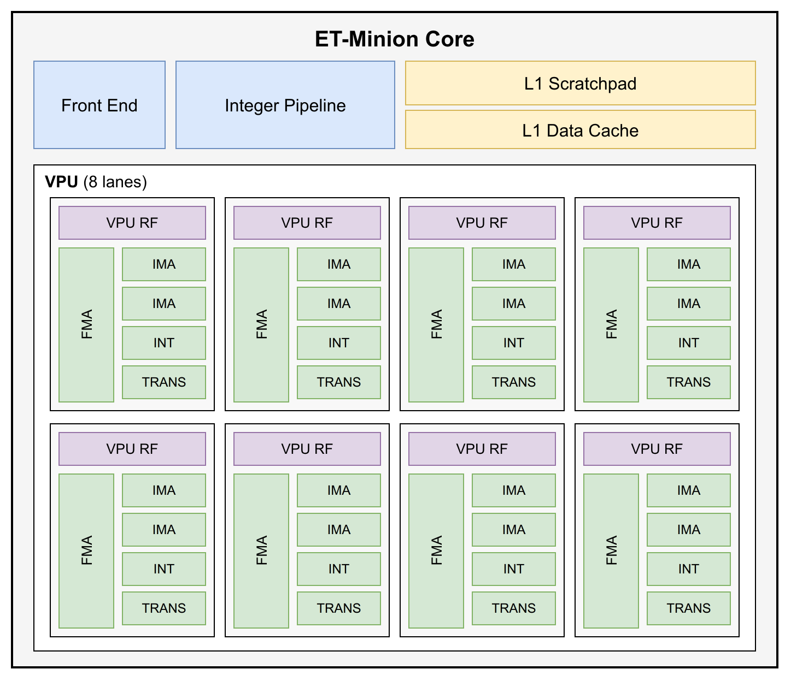
1.2.2. Neighborhood
A Neighborhood groups eight ET-Minion cores that share the following resources. In Figure 3, the L0 micro-caches are labeled "I-Cache".
-
L1 instruction cache: 32 KB, organized as 128 sets × 4 ways with 64-byte lines. It is shared by all eight cores, and its data RAMs are located outside the Neighborhood.
-
L0 micro-caches: two, each shared by four cores. Each holds 16 fully associative cache lines, sits between its cores and the L1 instruction cache, and accesses the L1 instruction cache on a miss.
-
Page-table walkers (PTWs): two, each shared by four cores. Each PTW serves the data caches of its four cores and the instruction-cache side.
-
Request/response path: a single path to the memory hierarchy outside the Neighborhood. Requests from the eight data caches, the instruction cache, the two PTWs and, the cooperative TensorLoad/TensorStore units are arbitrated into (256-bit internally which is converted to a 512-bit ET-Link bus).
-
Performance monitoring unit (PMU): twelve 64-bit event counters shared by the eight cores.
Eight counters count ET-Minion events and four count Neighborhood events. -
Cooperative TensorLoad:
-
Cooperative TensorStore:
-
Fast Local Messaging Network:
-
FLB unit:
-
Neighborhood ESRs:
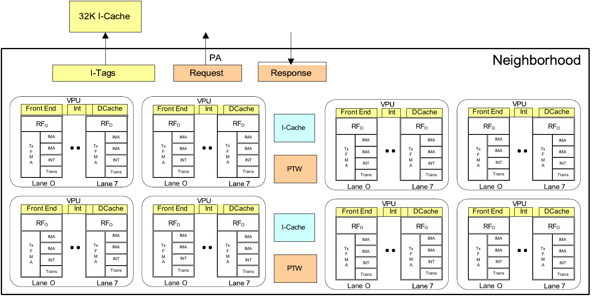
1.2.3. Minion Shire
A Minion Shire groups four Neighborhoods (Figure 4). It also contains:
-
Shire Cache: 4 MB, in four 1 MB banks. Programmable ESRs divide the cache into three kinds of partition:
-
L2 cache, private to the Shire
-
Slice of the chip-wide distributed L3 cache
-
Scratchpad memory
-
-
Crossbar: a 4 × 4 crossbar that connects each of the four Neighborhoods to each of the four Shire Cache banks. Each Neighborhood has one request and response port into the Shire Cache, and each bank accepts at most one request per cycle. The crossbar also connects the Neighborhoods to the uncached (UC) block.
-
Uncached (UC) block: receives the Neighborhood requests that are not sent to the Shire Cache banks. It handles uncacheable accesses, contains the fast local barrier (FLB) and fast local credit counter (FCC) units, and delivers messages sent between ET-Minion cores of different Shires. The Shire also supports fast inter-processor interrupts (IPIs).
-
ESR banks: the Esperanto System Registers (ESRs) configure the blocks in the Shire.
-
NoC interface: L2 misses and uncacheable accesses leave the Shire here, bound for other Shires or the memory controllers.
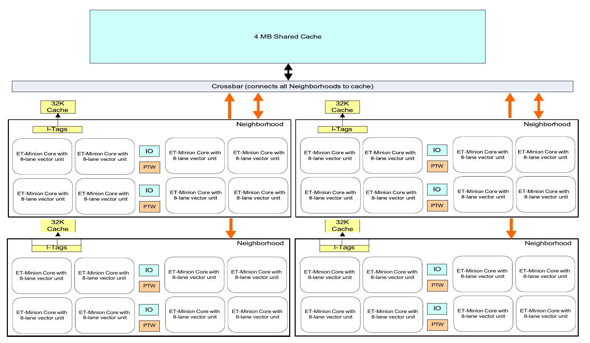
1.2.4. Minion Shire Array
The 34 Minion Shires, 1,088 ET-Minion cores in total, form the Minion Shire array. The roles of the Shires are assigned by software:
-
Compute: 32 Minion Shires operate in parallel as the compute array.
-
Master (management): one Minion Shire receives work and distributes it to the compute array.
-
Spare: one Minion Shire.
All Minion Shires are identical in hardware, so any Minion Shire can take any of these roles.
1.3. ET-Maxion and Service Processor
In addition to the ET-Minion cores, the device contains two other core types. Both are located in the I/O Shire (Section 1.4.4). This document does not describe them beyond this section.
1.3.1. ET-Maxion Cores
The ET-Maxion is a single-threaded, superscalar, out-of-order 64-bit RISC-V core intended for management and general-purpose tasks. The device contains four identical ET-Maxion cores. Together with a 4 MB shared L2/L3 cache they form the Maxion Neighborhood, and a system bus and coherency hub in the I/O Shire connects them. Figure 5 shows the ET-Maxion pipeline.
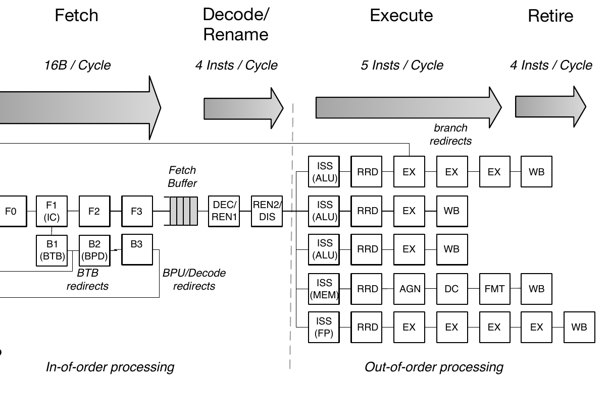
1.3.2. Service Processor
The Service Processor (SP) is a single-threaded ET-Minion core without the vector/tensor extensions. It has its own ROM and a 1 MB scratchpad SRAM, but none of the Neighborhood or Shire shared resources.
-
Boot. The SP is the first major block released from reset. It executes the boot code from ROM and initializes the device interfaces, including DDR, PCIe and USB.
-
Run time. It provides management services for the whole device.
-
Access. The SP can access every resource on the device, and some resources are accessible only to it.
The I/O Shire also contains a hardware root of trust, and six secure mailboxes for communication between four agents:
-
Service Processor
-
Master Minion Shire
-
ET-Maxions
-
PCIe host
1.4. Mesh Network-on-Chip
The mesh NoC is the top-level interconnect of ET-SoC-1 and connects all Shires. Figure 6 shows the device with the Shire array on the mesh, the external memory and PCIe interfaces, and the peripheral, Service Processor and debug networks.
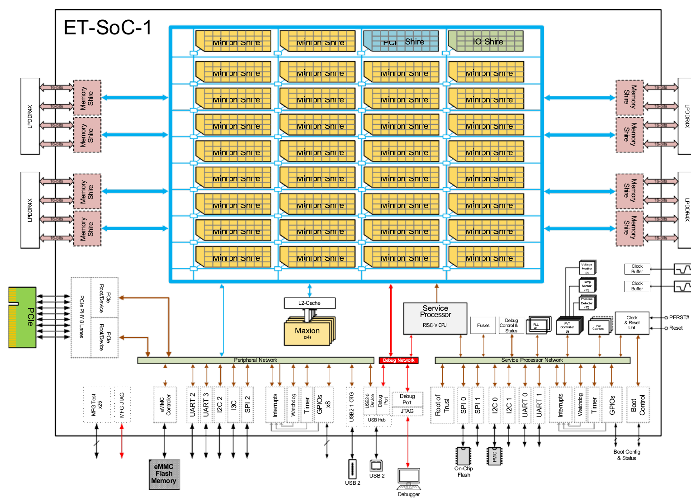
1.4.1. Mesh Topology and Mesh Stops
The mesh is organized as an 8 × 6 grid, and each Shire attaches to it at a mesh stop. The Memory Shires occupy the east and west edges, four on each side, which leaves the corners of the grid unoccupied. The result is 44 mesh stops, listed in Table 3.
| Shire | Count | Contents |
|---|---|---|
Minion Shire |
34 |
32 ET-Minion cores and a 4 MB Shire Cache |
Memory Shire |
8 |
LPDDR4X memory controller |
PCIe Shire |
1 |
PCIe controllers and PHY |
I/O Shire |
1 |
ET-Maxions, Service Processor and peripherals |
Total |
44 |
1.4.2. Memory Shires
Each Memory Shire contains a 32-bit LPDDR4X PHY and two memory controllers, each driving one 16-bit channel achieving 4,266 MT/s/channel. The Memory Shires also support global atomic operations.
1.4.3. PCIe Shire
The PCIe Shire contains two dual-mode PCIe Gen4 controllers that share an 8-lane PHY. It supports three lane configurations:
-
Single 8-lane endpoint or root complex
-
Single 4-lane endpoint or root complex
-
4-lane endpoint together with a 4-lane root complex
The interface is normally factory-configured as an endpoint.
1.4.4. I/O Shire
The I/O Shire contains the ET-Maxions and the Service Processor (Section 1.3). It also contains the device peripherals, which are grouped on three networks according to which agents may access them.
-
Service Processor network. Accessible only to the SP. It contains:
-
SPI, including the boot-flash controller
-
I2C, including the link to the external power-management controller
-
UART, including the SP console
-
GPIO, timers, watchdog and boot control
-
-
Peripheral network. Shared by the SP, the ET-Maxions and the master Minion Shire. It contains:
-
eMMC, USB 2.0 OTG, I2C/SMBus, I3C, SPI and UART
-
GPIO, timers and watchdog
-
-
Debug network. Provides debug access through JTAG and a USB 2.0 device port.
1.5. ET-SoC-1 Accelerator Card
ET-SoC-1 operates as an accelerator attached to a host system over PCI Express. It is mounted on a PCIe add-in card (Figure 7) with the following features:
-
PCIe x16 card-edge connector, with an 8-lane Gen4 interface to ET-SoC-1
-
ET-SoC-1 soldered to the card
-
Four LPDDR4X devices forming a 256-bit memory interface
-
64 GB eMMC flash memory
-
USB connectors for the ET-SoC-1 device and debug ports and for a UART interface, and a JTAG connector
-
DIP switches that select the boot options
Multiple ET-SoC-1 devices can also be integrated on a single card.
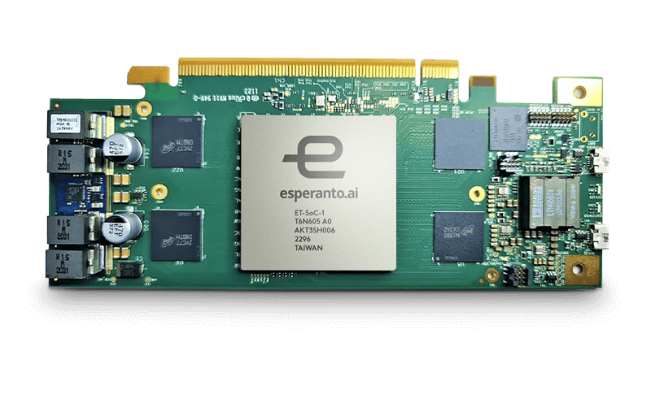
2. ET-Minion Core
2.1. Core Overview
This section describes the internal organization of the ET-Minion core: its block partitioning, hardware threads and instruction flow. The features of the core and its position in the ET-Minion hierarchy are summarized in Section 1.2.1.
The ET-Minion is a dual-threaded, in-order, single-issue 64-bit RISC-V core that implements RV64IMFC with the Esperanto instruction extensions. It is implemented in minion_top and consists of four units: the Front End, the integer pipeline, the L1 data cache and the VPU. The core fetches instructions from the Neighborhood L0 micro-cache and accesses memory through the Neighborhood memory path; it has no instruction cache of its own.
2.1.1. Block Partitioning
The ET-Minion core is implemented in minion_top (Figure 2). minion_top contains two blocks: core_top, which holds the Front End, the integer pipeline, the L1 data cache and the debug APB slave, and vpu_top, the vector processing unit. Table 4 lists the blocks.
| Block | Module | Function |
|---|---|---|
Front End |
|
Fetches instructions for both threads from the Neighborhood L0 micro-cache, expands compressed instructions, decodes them for the integer pipeline and the VPU, and issues one instruction per cycle to the integer pipeline (Section 2.2). |
Integer pipeline |
|
In-order, single-issue pipeline with the stages ID, EX, TAG, MEM and WB. Contains the integer register file, ALU, multiply/divide unit, integer, FP and mask scoreboards, and the CSRs. Redirects the Front End on a change of control flow. |
Data cache |
|
4 KB private L1 data cache, partly configurable as scratchpad memory. Contains the data TLB, PMA check, miss handling, replay queue, store merge, atomic, cache-management, tensor-load and reduce units, and the interface to the Neighborhood memory path. |
Debug APB slave |
|
APB slave for debug access to the core, including writes to the debug program buffer. |
VPU |
|
Vector processing unit with a control block and eight identical lanes. Executes floating-point, packed-integer, transcendental and tensor operations. |
2.1.2. Hardware Threads
The core runs two hardware threads (CORE_NR_THREADS = 2). Each thread has its own architectural state; the pipelines and execution units are shared, and instructions of the two threads are interleaved in the pipeline.
| Per thread | Shared by both threads |
|---|---|
Fetch PC, thread buffer and instruction FIFO in the Front End |
Front End request port, decoders and thread scheduler |
32 × 64-bit integer registers, in one register file indexed by thread |
Integer pipeline, ALU and multiply/divide unit |
32 vector registers, 256 bits wide (32 bits in each of the eight VPU lanes), in one register file indexed by thread |
VPU control and execution units |
CSR state, interrupt inputs and debug state |
L1 data cache and scratchpad |
Each thread is enabled by its bit of the enabled input of minion_top, which is registered in minion_top before use. Both threads start at the same reset vector (reset_vector) when enabled.
The Front End selects one thread per cycle for issue to the integer pipeline (Section 2.2.9). The integer pipeline can stall each thread independently, for example on WFI, a fence, a scoreboard hazard, or while the other thread holds exclusive mode.
2.1.3. Instruction Flow Through the Core
The Front End fetches instructions for both threads from the Neighborhood L0 micro-cache, expands compressed instructions, decodes them, and presents one instruction per cycle to ID, the first stage of the integer pipeline. The integer pipeline executes the instructions in order and passes memory operations to the data cache and vector operations to the VPU. In the opposite direction, the integer pipeline redirects the Front End to a new fetch address after a branch misprediction, exception or other change of control flow, and stalls a thread that must not issue.
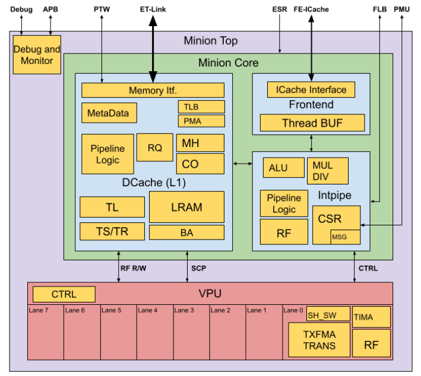
2.1.4. Interfaces to the Neighborhood
Table: ET-Minion core interface groups.
2.2. Front End
2.2.1. Overview
The Front End is the interface between the Neighborhood L0 micro-cache and the integer pipeline. It holds the program counter of each thread, fetches instructions from the L0 micro-cache, and delivers them, expanded and decoded, to the ID stage of the integer pipeline at a rate of one instruction per cycle. It serves both threads of the core, and restarts fetch at a new address when the integer pipeline redirects a thread.
To hide the latency of the L0 micro-cache, which is shared by four ET-Minion cores, the Front End uses double buffering. Each thread has an instruction buffer with two 256-bit entries, and each entry holds a block of instructions equal to half a cache line. A new block can therefore be requested while the thread consumes the instructions already received. Each entry has a dedicated register that holds the address of its block.
| Submodule | Instances | Function |
|---|---|---|
Thread buffer ( |
2, one per thread |
64-byte instruction buffer and the thread’s program counter. Issues fetch requests to the L0 micro-cache. |
RVC expander ( |
2, one per thread buffer |
Expands compressed (RVC) instructions to 32 bits. |
Request arbiter ( |
1 |
2:1 LRU arbiter. Selects the thread whose fetch request is sent to the L0 micro-cache. |
Integer decoder ( |
1 |
Decodes the instruction into integer-pipeline control signals. |
VPU decoder ( |
1 |
Decodes the instruction into VPU control signals. |
Instruction FIFO |
2, one per thread |
Two-entry queue of decoded instructions waiting for the integer pipeline. |
Thread scheduler ( |
1 |
Selects the thread whose instruction is presented to the integer pipeline. |
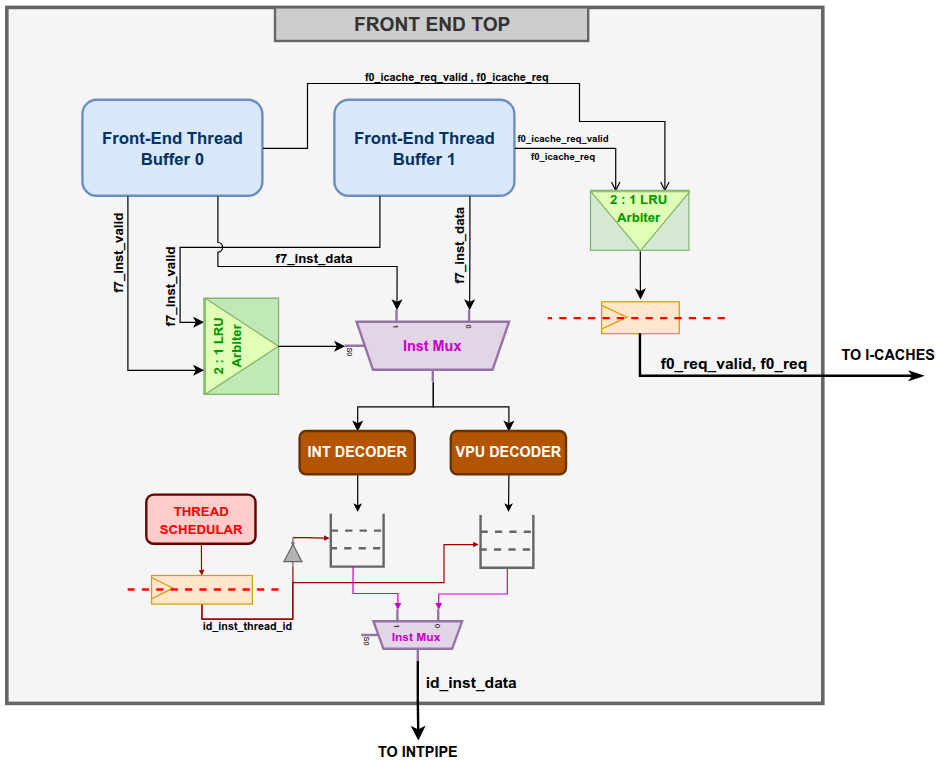
2.2.2. Interface
2.2.2.1. I/O Signals
Table 7 lists the ports of frontend_top. Connected to gives the signal in core_top. A width of 2 denotes one bit per thread.
| Signal | Dir | Width / type | Connected to | Description |
|---|---|---|---|---|
System |
||||
|
in |
1 |
|
Core clock. Each thread buffer derives a gated clock from it. |
|
in |
1 |
|
Warm reset. Synchronous. |
|
in |
1 |
|
Debug reset. Clears the program-buffer control and, while the thread is halted, refills the program buffer with |
|
in |
1 |
|
Disables Front End clock gating. Driven by the |
Thread control |
||||
|
in |
2 |
|
Thread enable. A rising edge starts fetch at the reset vector; a falling edge stops fetch. |
|
in |
48 |
|
Fetch address after reset or thread enable. |
|
in |
2 × |
|
Virtual-memory status of each thread, forwarded with every fetch request. |
Fetch request to the L0 micro-cache |
||||
|
out |
1 |
|
The F1 I-cache request register holds a request. |
|
out |
|
|
Fetch request: thread, VM status and address. |
|
in |
1 |
|
The Neighborhood accepts the request in this cycle. |
Fetch response from the L0 micro-cache |
||||
|
in |
1 |
|
A response is present. It carries no thread identifier. |
|
in |
1 |
|
The response is a miss and carries no instruction data. |
|
in |
|
|
32-byte block and status. |
|
in |
1 |
|
The L0 micro-cache has completed a line or translation fill. |
Redirect and stall from the integer pipeline |
||||
|
in |
2 |
|
Redirect. Flushes the thread and restarts fetch at |
|
in |
2 × |
|
Redirect PC, speculation status and debug-mode transition. |
|
in |
2 |
|
Thread must not issue. Raised for |
Instruction to the integer pipeline (ID) |
||||
|
out |
1 |
|
The instruction presented to the integer pipeline is valid. |
|
in |
1 |
|
The integer pipeline is ready to accept the instruction. |
|
out |
1 |
|
Thread of the instruction. |
|
out |
|
|
Instruction, PC and fetch status. |
|
out |
|
|
Integer decode. |
|
out |
|
|
VPU decode. Valid only for VPU instructions. |
|
out |
|
|
VPU and mask register usage, for hazard checks in the integer pipeline. |
Debug |
||||
|
in |
2 |
|
A halt request is pending. |
|
in |
2 |
|
The thread is in debug mode. |
|
in |
64 |
|
Program-buffer write data. |
|
in |
4 |
|
Program-buffer word write enables. |
|
in |
1 |
|
Thread whose program buffer is written. |
|
in |
2 |
|
Start executing the program buffer. |
2.2.2.2. Data Structures
| Field | Width | Description |
|---|---|---|
|
1 |
Requesting thread. |
|
|
Virtual-memory status of the thread (Table 9). |
|
49 |
Fetch address. The L0 micro-cache returns the aligned 32-byte block that contains it. |
Front End addresses are 49 bits wide: the 48-bit virtual address and one additional bit that allows a non-canonical 64-bit address to be represented.
| Field | Width | Description |
|---|---|---|
|
2 |
Current privilege level. |
|
1, 2, 1, 1 |
Corresponding |
|
1 |
Thread is in debug mode. |
| Field | Width | Description |
|---|---|---|
|
256 |
32-byte instruction block. |
|
1 |
Instruction page fault. |
|
1 |
Instruction access fault. |
|
1 |
Block is in a cacheable region. |
|
1 |
Bus error on the line. |
|
1 |
ECC error on the line. |
| Field | Width | Description |
|---|---|---|
|
49 |
New fetch PC. |
|
1 |
Thread has older instructions in the integer pipeline. Driven every cycle, independently of |
|
1 |
Redirect enters debug mode. |
|
1 |
Redirect leaves debug mode. |
| Field | Width | Description |
|---|---|---|
|
49 |
PC of the instruction. |
|
32 |
Instruction. Compressed instructions are delivered expanded. |
|
1 each |
Page fault / access fault on the entry holding the start of the instruction. |
|
1 each |
Page fault / access fault on the entry holding the upper half of an instruction that crosses entries. |
|
1 |
Instruction must be replayed. |
|
1 |
Instruction was compressed. |
|
1 each |
Bus error / ECC error on the entry or entries holding the instruction. |
| Field | Width | Description |
|---|---|---|
|
89 |
Instruction and fetch status (Table 12). |
|
45 |
VPU decode ( |
|
45 |
Integer decode ( |
| Structure | Width | Content |
|---|---|---|
|
45 |
Legal instruction; software-emulated (M-code) instruction; branch, |
|
45 |
VPU function; execution unit (TxFMA, shift/swizzle, transcendental ROM); conversion and load/store type; source, third-source and destination reads and write; mask register reads; operand swaps; scalar or packed; data type; integer-register transfer; rounding; FP flag update. |
2.2.2.3. Configuration Parameters
| Define | Value | Description |
|---|---|---|
|
2 |
Threads per core. |
|
2 |
Thread-buffer entries per thread. |
|
256 |
Bits per fetch block and per entry. |
|
5 |
Read-pointer width: 1 entry bit and 4 halfword bits. |
|
49 |
Front End PC width. |
2.2.3. Pipeline Stages
The Front End pipeline has eight stages, F0 to F7 (Figure 10). Stages F1 to F5 overlap the L0 micro-cache pipeline.
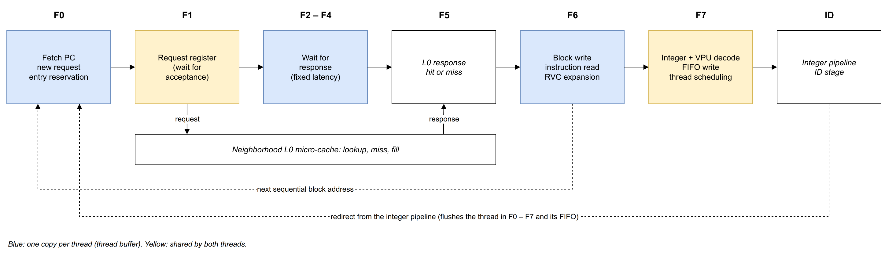
- F0 Stage
-
The F0 stage receives instruction-block requests from both thread buffers and decides which one gets access to the L0 micro-cache using a 2:1 LRU arbiter. The selected request is registered and sent to the L0 micro-cache through the Neighborhood interface. This stage also handles the enabling and disabling of threads and redirect requests from the integer pipeline, for example the new address after a mispredicted branch.
- F1–F5 Stage
-
The selected request is held in F1 until the L0 micro-cache accepts it, which happens at the earliest in the second F1 cycle. The thread then waits for the response. The L0 micro-cache always responds to an accepted request, whether it is a hit or a miss, with a fixed five-cycle latency: counting the cycle in which it accepts the request as the first cycle, the response is returned in the fifth cycle, in F5 (Figure 12).
- F6 Stage
-
The response from the L0 micro-cache is checked. If it is a hit, the instruction block is stored in the buffer of the thread that issued the request. If it is a miss, nothing is stored, and the thread waits for the cache to be filled. Instruction reading is independent of the fetch request: whenever a buffer entry holds instructions, the thread reads its next instruction, expands it if it is compressed, and passes it on for decoding, in parallel with any request in F0 to F5.
- F7 Stage
-
This stage selects which thread’s instruction is read from its buffer. The selected instruction is decoded and stored, along with its control signals, in that thread’s FIFO. The thread scheduler decides which thread’s FIFO issues an instruction to the integer pipeline in the next cycle. If both threads are eligible, they are selected in round-robin order; otherwise, the eligible thread is selected.
With an L0 hit and no competing requests, the first instruction of a block reaches ID nine cycles after its request is issued in F0.
2.2.4. Interaction with the L0 Micro-Cache
Each L0 micro-cache serves the eight threads of four ET-Minion cores. Figure 11 shows the request and response path of one core. This section describes the interface from the Front End side; the Neighborhood side is described in Section 3.2.
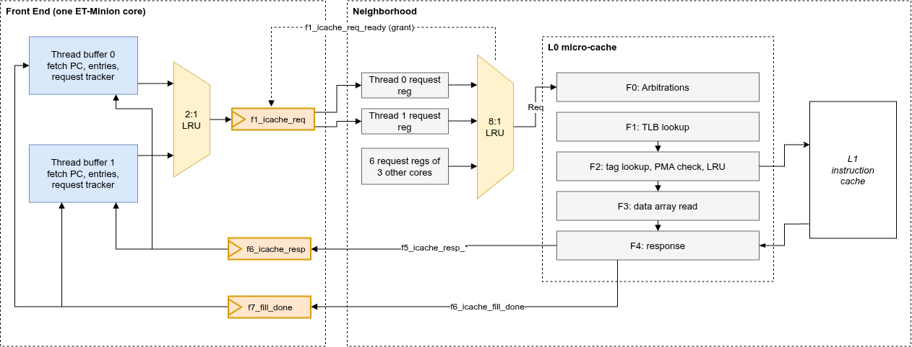
2.2.4.1. Request Arbitration and Acceptance
A fetch request passes through the following steps:
-
2:1 LRU arbiter, F0. Selects between the two threads of the core. With two clients the grant alternates when both threads request. The priority is updated on every grant.
-
F1 I-cache request register (
f1_icache_req). Holds the granted request until the Neighborhood accepts it withf1_icache_req_ready. The register accepts a new request when it is empty or its current request is accepted in the same cycle; otherwise the 2:1 arbiter issues no grant. -
8:1 LRU arbiter, Neighborhood. The request is first captured in a per-thread request register, then arbitrated against the other seven threads served by the same L0 micro-cache. The grant of this arbiter is returned as
f1_icache_req_ready. Because of the capture register, a request is accepted at the earliest in its second F1 cycle.
2.2.4.2. Response Timing and Ownership
The L0 micro-cache has a five-stage pipeline and returns exactly one response per accepted request, from its last stage, for a hit and for a miss alike. The response reaches the Front End in F5.
The response carries no thread identifier. Each thread buffer identifies its responses by position in time: when its request is granted, the thread inserts a token (a valid bit and the reserved entry number) into its own F1–F6 tracker. The token remains in F1 until the request is accepted and then advances one stage per cycle. A response registered in F6 together with a valid token belongs to that thread, and the token selects the entry to be written. The response and fill-done signals are registered in frontend_top and broadcast to both thread buffers.
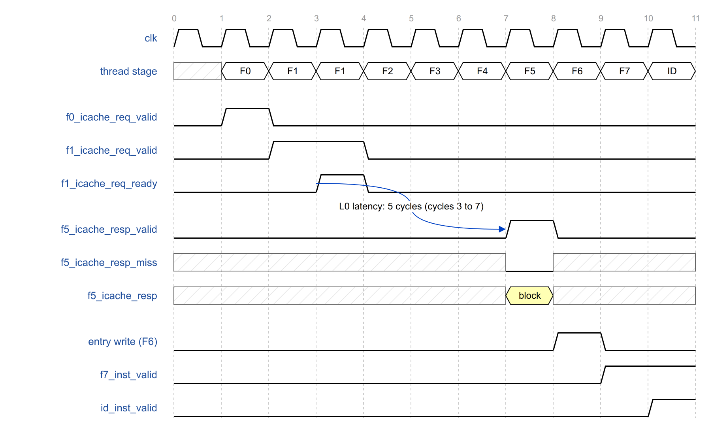
In Figure 12 the request is issued in cycle 1, accepted in cycle 3, and the block returns in cycle 7. It is written in cycle 8; the first instruction of the fetched block is in the F7 stage in cycle 9 and in the ID stage in cycle 10.
2.2.4.3. Miss Handling and Fill Done
A miss response has the same timing as a hit and carries no data. On a miss the thread writes nothing, keeps its fetch PC and enters a sleep state (f0_miss_pending) in which it issues no requests.
On completion of a line fill from the L1 instruction cache, or of a translation fill, the L0 micro-cache pulses f6_icache_fill_done. The signal is broadcast to all threads of the L0 micro-cache and carries no address. Every sleeping thread wakes and retries; a thread whose line is still absent misses again and sleeps until the next fill. A redirect, a thread disable or a pending halt also clears the sleep state.
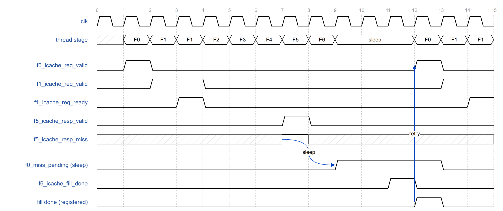
In Figure 13 the miss response arrives in cycle 7 and the thread sleeps from cycle 9. Fill done arrives in cycle 11, is registered, and the thread retries in cycle 12.
Fill done is issued one cycle after the response slot. A request that looks up the L0 micro-cache while a fill is being written still misses, and its response is the last miss that the fill can cause. Issuing fill done one cycle after that response, and registering it again in the Front End, ensures that every thread has entered the sleep state before the wake-up arrives. A wake-up that arrived first would be lost, and the thread would wait for an unrelated fill.
2.2.4.4. Request Cancellation
A redirect invalidates the thread’s tokens in F2 to F5 and suppresses the F6 write, so the responses of in-flight requests are discarded.
A request still waiting in the F1 I-cache request register cannot be withdrawn: the register is shared and the Neighborhood already holds a copy. The thread records the cancellation and does not advance the token when the request is accepted. The I-cache lookup is performed and its response is discarded. The thread’s new request is issued only after the cancelled request has been accepted.
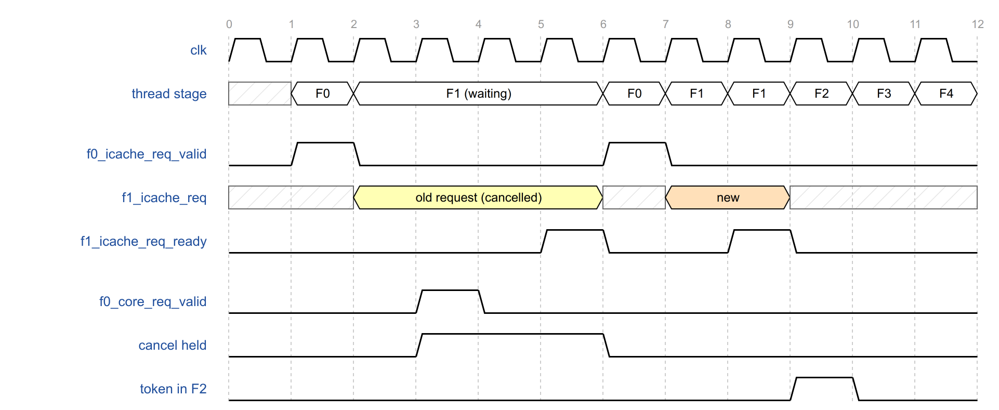
In Figure 14 the redirect arrives in cycle 3 while the request waits in F1. The cancellation is held until the request is accepted in cycle 5; no token enters F2. The new request is issued in cycle 6 and accepted in cycle 8.
2.2.5. Thread Buffer
Each thread has a thread buffer (frontend_thread_buffer). It holds the thread’s fetch PC and a 64-byte instruction buffer, generates and tracks fetch requests, writes the returned blocks, and extracts one instruction per cycle.
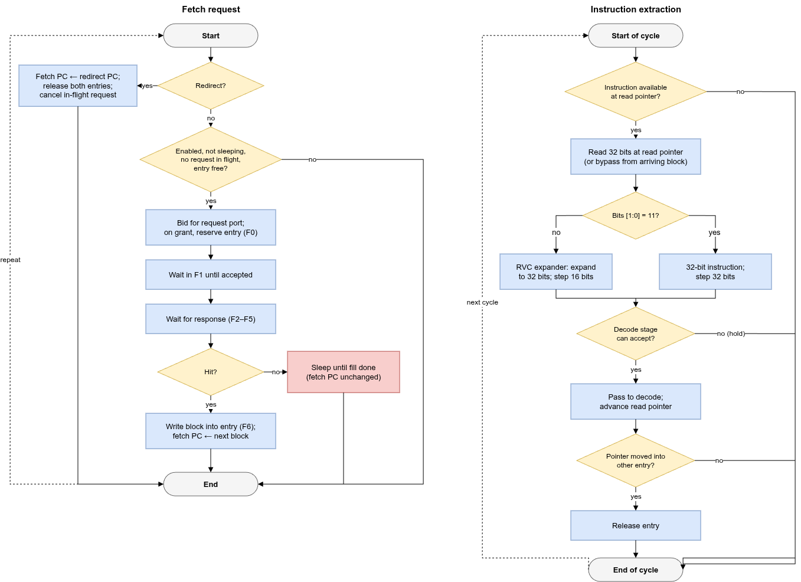
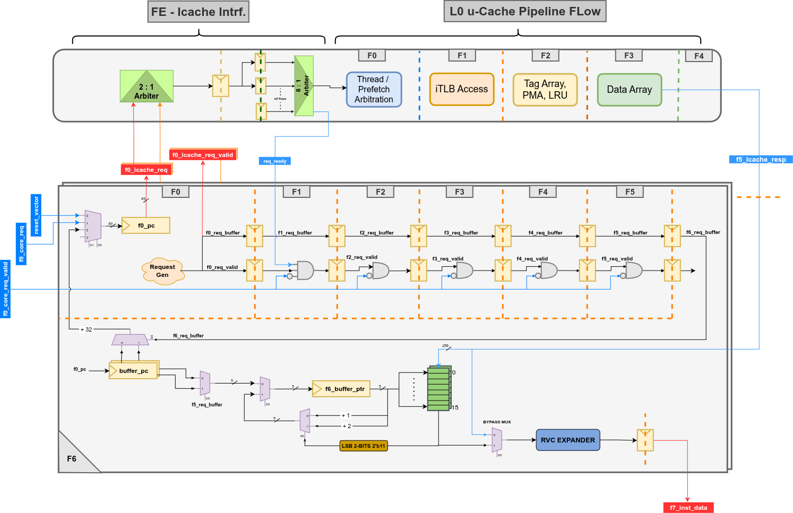
2.2.5.1. Buffer Entries
The instruction buffer has two entries of 256 bits (32 bytes). An entry holds one fetch block: eight 32-bit instructions, sixteen compressed instructions, or a combination. Two entries allow the next block to be fetched while the current block is consumed.
The entries are implemented as one latch-based register file with two ports:
-
Write port, 256 bits. Writes a complete block into one entry, with one write enable per 32-bit word.
-
Read port, 32 bits. Addressed by the 5-bit read pointer
buffer_ptr: bit 4 selects the entry, bits 3:0 select a halfword within it. The read returns the 32 bits starting at that halfword.
The read port wraps around: halfword 15 of one entry is followed by halfword 0 of the other. The entries therefore form a ring of 32 halfwords, and a 32-bit instruction that starts in the last halfword of an entry is read in one access.
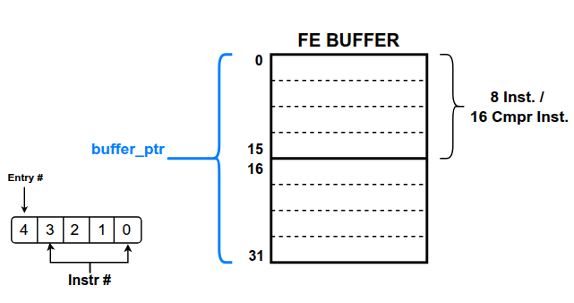
| State | Description |
|---|---|
Empty flag |
Entry holds no instruction still to be sent. Set for both entries at reset. |
Block address |
Address of the instruction block held in the entry ( |
Fault flags |
Page fault and access fault of the block. |
Error flags |
Bus error and ECC error of the block. |
Cacheable flag |
Block is in a cacheable region. Used for replay. |
2.2.5.2. Program Counter
Each thread buffer holds a 49-bit fetch PC, the address of the next block to request. It is updated as listed in Table 17.
| Event | New fetch PC |
|---|---|
Reset, or thread enabled |
|
Block written into an entry |
Start of the next aligned 32-byte block. |
Redirect (highest priority) |
|
Only the first block after a reset or redirect can start within a 32-byte block; all later blocks are aligned. A miss does not change the fetch PC, so the same address is requested again after the fill.
The PC of each extracted instruction is formed from the upper bits of its entry’s block address and the halfword position of the read pointer.
2.2.5.3. Request Generation and Entry Fill
A thread issues a request in F0 when all conditions in Table 18 are met.
| Condition | Reason |
|---|---|
Thread enabled, and not in the enable cycle |
Reset vector is loaded at the end of the enable cycle. |
No redirect in the current cycle |
Redirect PC is loaded at the end of the cycle. |
Thread not sleeping |
A missed line is requested again only after a fill. |
No request of the thread in F1 to F6 |
At most one request per thread is in flight, which keeps responses in order and allows ownership by timing. |
An entry is empty or is released in the current cycle |
The response cannot be stalled and must have a destination. |
Not in reset; not executing the debug program buffer |
— |
On a grant, the thread reserves an entry and records the fetch PC of the request as the entry’s block address. If both entries are empty, entry 1 is reserved.
Table 19 shows the entry sequence after a thread is enabled at address A. [m, n] gives the block number in entry 0 and entry 1; x denotes an empty entry.
| Step | Event | Entries |
|---|---|---|
1 |
Thread enabled at address A. |
|
2 |
Block containing A written into entry 1; extraction starts at the halfword of A. |
|
3 |
Entry 0 empty: the next block is requested when the first request completes. |
|
4 |
Last instruction of entry 1 extracted; entry 1 released. |
|
5 |
Next block requested into entry 1; extraction continues in entry 0. |
|
A block write enables only the words from the word containing the request address to word 7. The register file requires its write-data enables one clock phase before the write; the thread computes them in F5 from its token and f5_icache_resp_miss, holds them in a phase latch, and applies the word write enables in F6.
2.2.5.4. Instruction Extraction
When both entries are empty, the read pointer is loaded in F5 with the halfword position of the request address within the reserved entry, so that extraction can start within a block. Afterwards the pointer advances with each extracted instruction.
An instruction is available when the entry it is read from is not empty. A 32-bit instruction that starts in halfword 15 requires both entries to be non-empty; the wrap-around read returns both halves, the pointer moves to halfword 1 of the other entry, and the first entry is released.
If the entry being read is empty but its block is written in the same cycle, the instruction is taken directly from the response data (bypass). The upper half of an instruction that crosses into an entry being written is bypassed in the same way. The first instruction of a block is therefore extracted in the cycle the block is written. The bypass does not check the destination entry of the response; with one request in flight per thread, the only block that can arrive is the one being waited for.
2.2.5.5. RVC Expander
The 32 bits read at the pointer are passed to the RVC expander (frontend_rvc_expander), a combinational RV64C decompressor:
-
If bits [1:0] are not
11, the instruction is compressed. It is expanded to its 32-bit equivalent and the pointer advances by 16 bits. -
If bits [1:0] are
11, the instruction is 32 bits wide. It passes through unchanged and the pointer advances by 32 bits.
All instructions are therefore 32 bits wide after F6. The rvc bit of frontend_core_resp indicates a compressed instruction; the integer pipeline uses it to advance the PC by 2 instead of 4.
2.2.5.6. Fault and Error Status
Each instruction carries the status of the entries it was read from:
| Field | Source |
|---|---|
|
Fault flags of the entry holding the start of the instruction. |
|
Fault flags of the entry holding the upper half of an instruction that crosses entries; zero otherwise. |
|
Error flags of the instruction’s entry, or of both entries for an instruction that crosses entries. |
|
Set when the entry’s block is not cacheable and |
All status fields are forced to zero while the debug program buffer is executed.
2.2.6. Entry Invalidation, Redirect and Thread Start
2.2.6.1. Entry Invalidation
An entry is released when its last instruction leaves F6, or when the whole buffer is flushed (Table 21).
| Condition | Entries released |
|---|---|
32-bit instruction at byte offset 28 of the entry is extracted |
This entry |
Compressed instruction at byte offset 30 is extracted |
This entry |
32-bit instruction at byte offset 30 is extracted (upper half in the other entry) |
This entry |
Redirect ( |
Both entries |
Entry to debug mode |
Both entries |
A response that reports a fault or error marks the reserved entry non-empty even if no data is written, so that the fault is delivered to the integer pipeline with the next instruction read from that entry.
2.2.6.2. Redirect
The integer pipeline redirects a thread by asserting f0_core_req_valid with the new PC in f0_core_req.pc. Redirects are issued for branch and jump mispredictions, exceptions and returns from trap, replays, inter-processor interrupts, and entry to or exit from debug mode. Table 22 lists the effect in the redirect cycle.
| Stage | Effect |
|---|---|
F0 |
Fetch PC loaded with the redirect PC. No request in this cycle. Sleep state cleared. |
F1 |
Request waiting in the F1 I-cache request register marked cancelled. |
F2–F5 |
Tokens invalidated. |
F6 |
No block written. Both entries released. |
F7 |
Instruction discarded. |
FIFO |
Emptied. The thread is not eligible for scheduling in this cycle. |
The target block is requested in the following cycle. Its first instruction reaches ID ten cycles after the redirect (Figure 18).
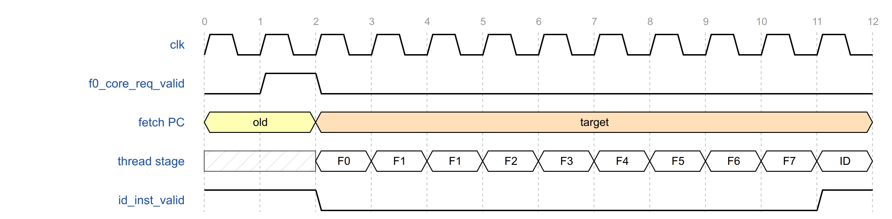
2.2.6.3. Thread Enable and Reset Vector
f0_thread_enabled is registered on entry to the Front End, and one-cycle enable and disable events are derived from its edges.
-
Enable. The fetch PC is loaded with
f0_reset_vectorat the end of the enable cycle, and the first request is issued in the next cycle. The first instruction reaches ID eleven cycles afterf0_thread_enabledrises (Figure 19). -
Disable. No further requests are issued, both entries are released and the sleep state is cleared. The instruction in F7 and the FIFO contents are not cleared; the thread scheduler no longer selects the thread.
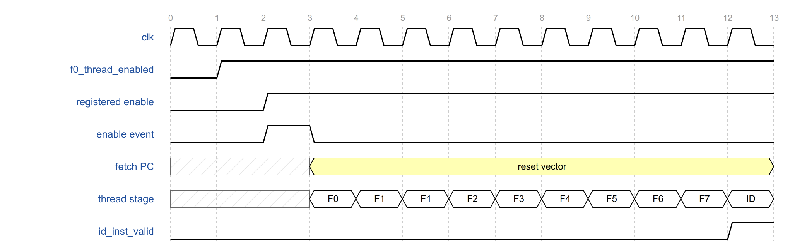
After reset, both entries are empty and the fetch PC holds the reset vector.
2.2.7. Decoders
One integer decoder (intpipe_decode) and one VPU decoder (vpu_decoder) are shared by both threads (Figure 20). In F7, the instruction of one thread passes through both decoders in parallel, and the instruction and both control words are written into that thread’s FIFO. Decoding before the FIFO removes decode logic from the ID stage.
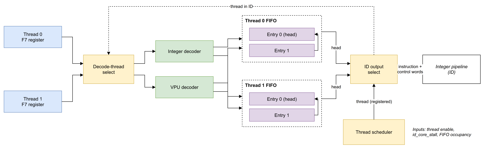
Both decoders are combinational look-up tables over the 32-bit instruction:
-
Integer decoder. Produces
minion_control(Table 14). An unlisted encoding is marked not legal, and the integer pipeline raises an illegal-instruction exception. -
VPU decoder. Produces
vpu_ctrl_sigs_tand a flag that identifies VPU instructions. An unlisted encoding is a non-VPU instruction.
A thread is a decode candidate when it has an extracted instruction, its FIFO is not full and it is awake (Section 2.2.9). The decoded thread is selected as follows:
| Candidates | Thread decoded |
|---|---|
Thread 0 only |
Thread 0 |
Thread 1 only |
Thread 1 |
Both |
Thread not presented in ID in the current cycle |
None |
Thread not presented in ID in the current cycle |
The instruction is written into the FIFO when the selected thread has an extracted instruction and its FIFO is not full; the awake condition affects only the selection.
The Front End does not issue instructions to the VPU. In ID, the VPU control word of the presented instruction (id_vpu_decoder_sigs) is sent directly to the VPU, bypassing the integer pipeline. The integer pipeline issues the instruction to the VPU in the same cycle, when the instruction is accepted in ID and decoded as an FP or VPU instruction, together with its thread and rounding mode. The integer pipeline also receives a summary of the VPU control word (id_vpu_core_ctrl), with the VPU and mask register reads and writes of the instruction, for its FP and mask scoreboard checks.
2.2.8. Instruction FIFO
Each thread has a two-entry instruction FIFO between F7 and ID. It decouples fetch from issue: while ID is stalled or serving the other thread, the thread continues to extract and decode, and the decoded instructions are held in the FIFO. An entry is a frontend_thread_data (Table 13): the instruction, its fetch status and both control words.
The FIFO is written when its thread is selected for decode and read when the integer pipeline accepts the thread’s instruction (id_inst_valid, id_inst_ready and id_inst_thread_id). It uses 2-bit read and write pointers; it is full when the pointers differ only in the wrap bit and empty when they are equal.
The storage is organized for timing rather than as an indexed array. Entry 0 is always the head, whose content drives the ID outputs; entry 1 is a holding register. The ID multiplexer therefore selects between two fixed registers, one per thread.
| Occupancy | Event | Update |
|---|---|---|
Empty |
Write |
Entry 0 ← new instruction |
One |
Write and read |
Entry 0 ← new instruction |
One |
Write |
Entry 1 ← new instruction |
One |
Read |
None; FIFO becomes empty |
Full |
Read |
Entry 0 ← entry 1 |
The VPU control word of an entry is written only for VPU instructions. For other instructions it retains the value of an earlier VPU instruction, so id_vpu_decoder_sigs and id_vpu_core_ctrl are valid only for VPU instructions.
A redirect empties the thread’s FIFO.
2.2.9. Thread Scheduler
The integer pipeline accepts one instruction per cycle from either thread. The thread scheduler (frontend_thread_sched) selects the thread whose FIFO head is presented to ID in the next cycle.
- Awake
-
The thread is enabled and
id_core_stallis deasserted. Awake is registered, so a stall affects scheduling one cycle after it is asserted. - Ready
-
The thread’s FIFO is not empty or is being written in the current cycle, and the thread is not being redirected. Including the write allows an instruction to pass from F7 to ID in consecutive cycles.
A thread that is awake and ready is eligible. The scheduler selects between eligible threads in round-robin order:
| Thread 0 eligible | Thread 1 eligible | Selected |
|---|---|---|
Yes |
No |
Thread 0 |
No |
Yes |
Thread 1 |
Yes |
Yes |
Thread not selected previously |
No |
No |
Thread 0 |
The previous selection is updated only when at least one thread is eligible. The selection is registered and drives id_inst_thread_id in the next cycle.
The head of the selected thread’s FIFO drives id_inst_data, id_intpipe_ctrl, id_vpu_decoder_sigs and id_vpu_core_ctrl. id_inst_valid is asserted when that FIFO is not empty, and the integer pipeline accepts the instruction with id_inst_ready. id_inst_valid is not qualified with id_core_stall; the integer pipeline applies the stall. The thread in ID is reselected every cycle, so an instruction that is not accepted can be replaced by the other thread’s instruction in the next cycle; it remains at the head of its FIFO.
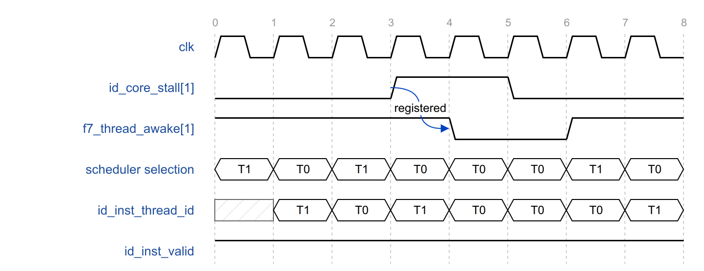
In Figure 21 both threads are eligible and alternate. id_core_stall of thread 1 is asserted in cycles 3 and 4, and thread 1 is not awake in cycles 4 and 5. Thread 0 is selected in cycles 3 to 5 and presented in ID in cycles 4 to 6; the selection alternates again from cycle 6.
2.2.10. Halt and Debug Program Buffer
2.2.10.1. Halt
The integer pipeline takes a halt on a valid instruction in ID. While halt is asserted for a thread, the thread buffer generates a placeholder instruction instead of fetching:
-
The thread follows the normal request conditions but does not bid for the request port. The request is treated as accepted internally, and its token enters the tracker.
-
The token passes through F1 to F6.
-
In F6 an entry write is forced without a response. The data is the last registered response data; fault and error flags are cleared, and the instruction is treated as 32 bits wide.
-
The placeholder passes through decode and the FIFO to ID, where the integer pipeline takes the halt.
The content of the placeholder is undefined. A pending halt also clears the sleep state.
2.2.10.2. Debug Program Buffer
In debug mode, entry 0 of the halted thread’s buffer is used as the program buffer: the debugger writes instructions into it and the thread executes them.
| Step | Operation |
|---|---|
Entry |
A redirect with |
Write |
The debugger writes the program buffer through |
Execute |
|
Exit |
A redirect with |
| Word | Write enable | Data |
|---|---|---|
0 |
|
|
1 |
|
|
2 |
|
|
3 |
|
|
4 |
— |
|
Word 4 cannot be written by the debugger and always holds EBREAK, so execution returns to debug mode at the end of the program buffer. While the program buffer is executed, all fault, error and replay status is forced to zero. A debug reset while the thread is halted rewrites words 0 to 4 with EBREAK.
2.3. Integer Pipeline
2.3.1. Overview
Figure: Integer pipeline block diagram.
2.3.2. Pipeline Stages
Figure: Integer pipeline stages (ID, EX, TAG, MEM, WB).
2.3.3. Interfaces
Table: Integer pipeline interface signals.
2.3.12. CSRs and Privilege Modes
Table: CSR groups.
2.4. Data Cache
2.4.1. Overview
Figure: Data cache block diagram.
2.4.2. Organization and Operating Modes
Table: Data cache operating modes.
2.4.3. Interfaces
Table: Data cache interface signals.
2.4.4. Request Pipeline
Figure: Data cache request pipeline.
2.5. Vector Processing Unit
2.5.1. Overview
Figure: VPU block diagram.
2.5.2. Interfaces
Table: VPU interface signals.
2.5.5. Lanes
Figure: VPU lane.
3. Neighborhood
3.1. Neighborhood Overview
3.1.1. Partitioning
Figure: Neighborhood block diagram.
3.1.4. External Interfaces
Table: Neighborhood interface groups.
3.2. Front End – I-Cache Interface
3.2.1. Overview
Figure: Front End to I-cache connection within a Neighborhood.
3.2.2. Interface Signals
Table: Front End – I-cache interface signals.
3.2.4. Request and Response Timing
Figure: Timing of a request and its hit response.
3.2.5. Miss, Sleep and Fill-Done Protocol
Figure: Timing of a miss, fill and retry.
3.3. L0 Micro-Cache
3.3.1. Overview
Table: L0 micro-cache characteristics.
3.3.2. Internal Blocks
Figure: L0 micro-cache block diagram.
3.3.3. Pipeline Stages
Figure: L0 micro-cache pipeline.
3.3.10. Software Prefetch
Figure: Prefetch state machine.
3.4. L1 Instruction Cache
3.4.1. Overview
Figure: L1 instruction cache block diagram.
3.5. Shared Page-Table Walker
3.5.2. Walk Sequence and Page Sizes
Figure: Page-table walk state machine.
3.6. Memory Request and Response Path
3.6.1. Miss, Evict and Fill FIFOs
Figure: Neighborhood memory request and response path.